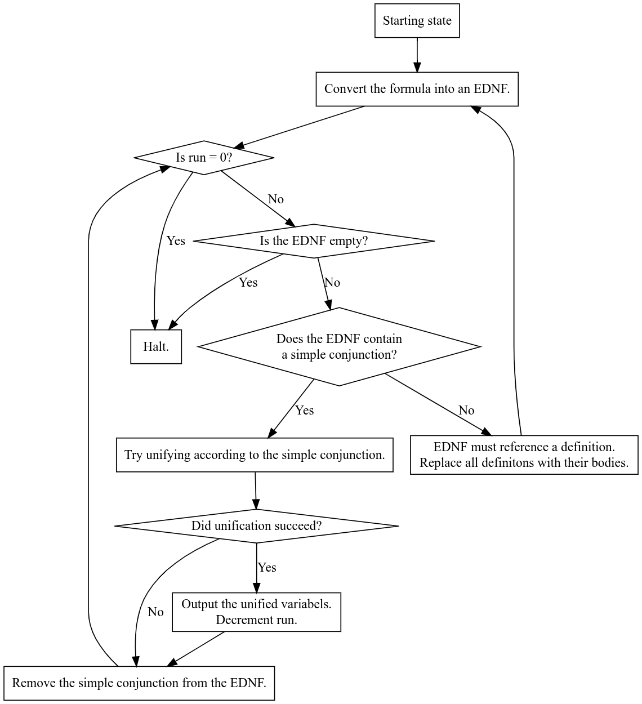

Cool Relations
1 Code from The Reasoned Schemer 2nd Edition
| (require racket/match) |
| (require racket/include) |
| (include "../../CodeFromTheReasonedSchemer2ndEd/trs2-impl.scm") |
| (defrel (appendo l r o) |
| (conde ((== l '()) (== r o)) |
| ((fresh (h t rec) |
| (== l `(,h . ,t)) |
| (== o `(,h . ,rec)) |
| (appendo t r rec))))) |
2 Asserting that a list is non-empty
| (defrel (nonemptyo l) |
| (fresh (h t) |
| (== l `(,h . ,t)))) |
3 The Riffle Relation
Elsewhere, this relation is sometimes called ‘shuffle‘
| (defrel (riffleo l r o) |
| (fresh (h t rec) |
| (conde ((== l '()) (== r '()) (== o '())) |
| ((== l `(,h . ,t)) (== o `(,h . ,rec)) (riffleo t r rec)) |
| ((== r `(,h . ,t)) (== o `(,h . ,rec)) (riffleo l t rec))))) |
If we consider riffle to be the nondeterministic functional version of riffleo, and append to be the deterministic functional version of append, then we have some striking similarities.
append and riffle are both linear (they use each element from each input list exactly once in the output).
| (forall (a b) |
| (= (+ (length a) (length b)) (length (append a b))) |
| (= (+ (length a) (length b)) (length (riffle a b)))) |
append and riffle are both associative:
| (forall (a b c) |
| (= (append a (append b c)) |
| (append (append a b) c) |
| (append a b c)) |
| |
| (= (riffle a (riffle b c)) |
| (riffle (riffle a b) c) |
| (riffle a b c))) |
riffle and append also share the property that, if the output list is both sorted, then both of the inputs must have been sorted as well. In general, order within the sublists is preserved.
| (forall (a b) |
| (-> (or (sorted? (append a b)) |
| (sorted? (riffle a b))) |
| |
| (and (sorted? a) |
| (sorted? b)))) |
However, there is one property of riffleo not shared by appendo: the act of riffling is commutative. When a dealer shuffles cards, it doesn’t matter which deck is in his right hand, and which is in his left.
| (forall (a b) |
| (== (run* (x) (riffleo a b x)) |
| (run* (x) (riffleo b a x)))) |
Suppose l is a finite list. How many results does
(run* (x1 x2 x3 rest) (riffleo `(,x1 ,x2 ,x3) rest l))
produce? This is like nondeterministically choosing three elements from a list in a fixed order. So the exact number of results is known:
| (forall (l) |
| (= (length (run* (x1 x2 x3 rest) (riffleo `(,x1 ,x2 ,x3) rest l))) |
| (choose (length l) 3))) |
Where (choose n k) is mathematical combination. This example is equivalent to deterministically iterating over the list with three loops in cubic time. In general:
| (forall (l) |
| (= (length (run* (chosen not-chosen) (riffleo chosen not-chosen l))) |
| (choose (length l) (length chosen)) |
| (choose (length l) (length not-chosen)))) |
3.1 Picking unordered
Sometimes you want to explicitly pick items from an unordered list. For that, you can use picko, which is defined in terms of riffleo.
| (defrel (pick-oneo x not-picked l) |
| (riffleo `(,x) not-picked l)) |
| |
| (defrel (picko picked not-picked l) |
| (fresh (first not-first rest) |
| (conde ((== picked '()) (== not-picked l)) |
| ((== picked `(,first . ,rest)) |
| (pick-oneo first not-first l) |
| (picko rest not-picked not-first))))) |
4 Appending n lists together
Note that, in this naive definition, there could be an infinite amount of empty lists.
| (defrel (appendo* l o) |
| (fresh (h t rec) |
| (conde ((== l '()) (== o '())) |
| ((== l `(,h . ,t)) |
| (appendo h rec o) |
| (appendo* t rec))))) |
So we need a new version which only allows nonempty lists to be appended together.
<nonempty-appendo*> ::=| (defrel (nonempty-appendo* l o) |
| (fresh (h t rec) |
| (conde ((== l '()) (== o '())) |
| ((== l `(,h . ,t)) |
| (nonemptyo h) |
| (appendo h rec o) |
| (nonempty-appendo* t rec))))) |
Given some finite list l, how many results does (run* (x) (nonempty-appendo* x l)) produce?
Starting with an easy one, say, a list with 4 elements.
> (run* (x) (nonempty-appendo* x '(e1 e2 e3 e4)))
| '((((e1 e2 e3 e4))) |
| (((e1) (e2 e3 e4))) |
| (((e1 e2) (e3 e4))) |
| (((e1) (e2) (e3 e4))) |
| (((e1 e2 e3) (e4))) |
| (((e1) (e2 e3) (e4))) |
| (((e1 e2) (e3) (e4))) |
| (((e1) (e2) (e3) (e4)))) |
A few tests for different values of l:
| > (map |
| (lambda (l) |
| (length (run* (x) (nonempty-appendo* x l)))) |
| '(() |
| (a) |
| (a a) |
| (a a a) |
| (a a a a) |
| (a a a a a) |
| (a a a a a a))) |
These are powers of two. Let’s see how this can be formally proved.
| (forall (l) |
| (= |
| (length (run* (x) (nonempty-appendo* x l))) |
| (expt 2 (length l)))) |
4.1 Equivalence of relations and a new version of nonempty-appendo*
Two mathematical relations are considered equal if the set of satisfying tuples is the same. Therefore, two miniKanren relations can be considered equivalent if you ignore duplicates and the order they come back in.
But how does this hold up in the presence of fresh variables? Fresh variables can be used to encode an infinite amount of tuples in the relation. For instance, in appendo:
| > (run 7 (a b c) (appendo a b c)) |
| '((() 0 0) |
| ((0) 1 (0 . 1)) |
| ((0 1) 2 (0 1 . 2)) |
| ((0 1 2) 3 (0 1 2 . 3)) |
| ((0 1 2 3) 4 (0 1 2 3 . 4)) |
| ((0 1 2 3 4) 5 (0 1 2 3 4 . 5)) |
| ((0 1 2 3 4 5) 6 (0 1 2 3 4 5 . 6))) |
Notice how the right hand side always remains fresh. This encodes an infinite number of solutions. The first result says "Any list left-appended by the empty list is itself."
4.1.1 Reversing a list and palindromes
Suppose we have defined a binary relation (reverseo a b) where b is the reverse of a. Notice that this is a symmetric relation: if (reverseo x y) holds, then so does (reverseo y x).
4.2 Nonempty riffling and Bell numbers
| (defrel (nonempty-riffleo* l o) |
| (fresh (h t rec) |
| (conde ((== l '()) (== o '())) |
| ((== l `(,h . ,t)) |
| (nonemptyo h) |
| (riffleo h rec o) |
| (nonempty-riffleo* t rec))))) |
5 List Length
| (defrel (lengtho l n) |
| (conde ((== n '()) (== l '())) |
| ((fresh (h t lrec lrec*2 x) |
| (== n `(,h . ,t)) |
| |
| (conde ((== h 0) |
| (== l lrec*2) |
| (fresh (a d) (== t `(,a . ,d)))) |
| |
| ((== h 1) |
| (== l `(,x . ,lrec*2)))) |
| |
| (double-lengtho lrec lrec*2) |
| (lengtho lrec t))))) |
| |
| (defrel (double-lengtho l l*2) |
| (conde ((== l '()) (== l*2 '())) |
| ((fresh (h h1 h2 t t*2) |
| (== l `(,h . ,t)) |
| (== l*2 `(,h1 ,h2 . ,t*2)) |
| (double-lengtho t t*2))))) |
6 Smaller relations
| (defrel (palindromeo l) |
| (conde ((== l '())) |
| ((fresh (x y) |
| (appendo `(,x . ,y) `(,x) l) |
| (palindromeo y))))) |
7 Actor Association Game
The actor association game, known also as "The Six Degrees of Kevin Bacon" is a way to get from one actor to another by listing a chain of movie collaborations.
<actor-association-game> ::=| (defrel (bacono movies x y proof) |
| (fresh (movie actors rest-movies next rest-proof ^1) |
| (picko `((,movie . ,actors)) rest-movies movies) |
| (conde ((== proof `((,movie ,x ,y))) |
| (picko `(,x ,y) ^1 actors)) |
| ((== proof `((,movie ,x ,next) . ,rest-proof)) |
| (picko `(,x ,next) ^1 actors) |
| (bacono rest-movies next y rest-proof))))) |
| |
| |
| (define all-movies |
| '((glass-onion daniel-craig edward-norton) |
| (avengers robert-downey-jr scarlett-johannson) |
| (casino-royale daniel-craig eva-green) |
| (the-departed mark-wahlberg leonardo-dicaprio) |
| (spider-man-homecoming tom-holland robert-downey-jr) |
| (uncharted tom-holland mark-wahlberg))) |
8 Finite relationships using ino
| (defrel (ino x l) |
| (fresh (h t) |
| (== l `(,h . ,t)) |
| (conde ((== x h)) |
| ((ino x t))))) |
ino can also be defined in terms of riffleo.
8.1 A sample data base (taken from SICP
| (defrel (a-sample-databaseo query) |
| (ino query |
| '((address (Bitdiddle Ben) (Slumerville (Ridge Road) 10)) |
| (job (Bitdiddle Ben) (computer wizard)) |
| (salary (Bitdiddle Ben) 60000) |
| |
| |
| (address (Hacker Alyssa P) (Cambridge (Mass Ave) 78)) |
| (job (Hacker Alyssa P) (computer programmer)) |
| (salary (Hacker Alyssa P) 40000) |
| (supervisor (Hacker Alyssa P) (Bitdiddle Ben)) |
| |
| (address (Fect Cy D) (Cambridge (Ames Street) 3)) |
| (job (Fect Cy D) (computer programmer)) |
| (salary (Fect Cy D) 35000) |
| (supervisor (Fect Cy D) (Bitdiddle Ben)) |
| |
| (address (Tweakit Lem E) (Boston (Bay State Road) 22)) |
| (job (Tweakit Lem E) (computer technician)) |
| (salary (Tweakit Lem E) 25000) |
| (supervisor (Tweakit Lem E) (Bitdiddle Ben)) |
| |
| (address (Reasoner Louis) (Slumerville (Pine Tree Road) 80)) |
| (job (Reasoner Louis) (computer programmer trainee)) |
| (salary (Reasoner Louis) 30000) |
| (supervisor (Reasoner Louis) (Hacker Alyssa P)) |
| |
| (supervisor (Bitdiddle Ben) (Warbucks Oliver)) |
| (address (Warbucks Oliver) (Swellesley (Top Heap Road))) |
| (job (Warbucks Oliver) (administration big wheel)) |
| (salary (Warbucks Oliver) 150000) |
| |
| (address (Scrooge Eben) (Weston (Shady Lane) 10)) |
| (job (Scrooge Eben) (accounting chief accountant)) |
| (salary (Scrooge Eben) 75000) |
| (supervisor (Scrooge Eben) (Warbucks Oliver)) |
| |
| (address (Cratchet Robert) (Allston (N Harvard Street) 16)) |
| (job (Cratchet Robert) (accounting scrivener)) |
| (salary (Cratchet Robert) 18000) |
| (supervisor (Cratchet Robert) (Scrooge Eben)) |
| |
| (address (Aull DeWitt) (Slumerville (Onion Square) 5)) |
| (job (Aull DeWitt) (administration secretary)) |
| (salary (Aull DeWitt) 25000) |
| (supervisor (Aull DeWitt) (Warbucks Oliver)) |
| |
| (can-do-job (computer wizard) (computer programmer)) |
| (can-do-job (computer wizard) (computer technician)) |
| |
| (can-do-job (computer programmer) |
| (computer programmer trainee)) |
| |
| (can-do-job (administration secretary) |
| (administration big wheel))))) |
| > (run 1 (x) (a-sample-databaseo `(job ,x (computer programmer)))) |
| '(((Hacker Alyssa P))) |
9 Khmer Zodiac Animals
Similar to how English speakers say "pork" instead of "pig" when discussing food, Khmer speakers uses different words for animals in the zodiac years. A 12-row table describes the relationship completely.
| (defrel (khmer-zodiaco english typical-word zodiac-word) |
| (ino `(,english ,typical-word ,zodiac-word) |
| '((rat កណ្ដុរ ជូត) |
| (ox គោ ឆ្លូវ) |
| (tiger ខ្លា ខាល) |
| (rabbit ទន្សាយ ថោះ) |
| (dragon នាគ រោង) |
| (snake ពស់ ម្សាញ់) |
| (horse សេះ មមី) |
| (goat ពពែ មមែ) |
| (monkey ស្វា វក) |
| (rooster មាន់ រកា) |
| (dog ឆ្កែ ច) |
| (pig ជ្រូក កុរ)))) |
This table is crucial for Khmer learners, but I wish it had better vertical alignment.
10 A worked example: Decoding MIPS
There is a difference between the actual zeroes and ones that a MIPS CPU executes, and the assembly instructions that they represent. miniKanren can bridge this divide.
I’m going to try to delegate work to other relations where possible.
Adapted from: https://inst.eecs.berkeley.edu/~cs61c/resources/MIPS_help.html
| (defrel (mips) |
| (fresh (opcode rs rt rd shift func instruction IMM pseudo-address) |
| (conde ((appendo* `(,opcode ,rs ,rt ,rd ,shift ,func) instruction) (r-formato)) |
| ((appendo* `(,opcode ,rs ,rt ,IMM) instruction)) |
| ((appendo* `(,opcode ,pseudo-address) instruction))))) |
| |
| |
| |
| |
| (defrel (r-formato opcode $rs $rt $rd shamt funct) |
| (fresh (x) (== x x))) |
11 miniKanren and formal languages
11.1 miniKanren >= Regular
miniKanren can recognize regular languages.
| (defrel (regularo regex str) |
| (fresh (e1 e2 s1 s2) |
| (conde ((== regex 0) (== str '(0))) |
| ((== regex 1) (== str '(1))) |
| |
| ((== regex `(+ ,e1 ,e2)) |
| (appendo s1 s2 str) |
| (regularo e1 s1) |
| (regularo e2 s2)) |
| |
| ((== regex `(or ,e1 ,e2)) |
| (conde ((regularo e1 str)) |
| ((regularo e2 str)))) |
| |
| ((== regex `(* ,e1)) |
| (conde ((== str '())) |
| ((regularo `(+ ,e1 ,regex) str))))))) |
11.2 miniKanren >= Context-Free
11.2.1 Recognizing the nonregular language a^nb^n
| (defrel (anbno str) |
| (conde ((== str '())) |
| ((fresh (middle) |
| (appendo `(a . ,middle) '(b) str) |
| (anbno middle))))) |
| (defrel (context-freeo terminal-symbols production-rules string parse-tree) |
| 'TODO) |
11.3 miniKanren >= P via Circuit-Value-Problem
11.4 miniKanren >= NP
11.4.1 via Satisfiability
11.4.2 via 3-Color
Given:
- I want to three-color the overall graph.
- u and v cannot be the same color
Assuming:
- The three colors are
'red,
'green, and
'blue.
Then I can conclude:
<color-=/=> ::=| (defrel (color-=/= u v) |
| (ino `(,u ,v) |
| '((red green) |
| (red blue) |
| (green red) |
| (green blue) |
| (blue red) |
| (blue green)))) |
| (defrel (three-colorableo g coloring) |
| (conde |
| ((== g '())) |
| ((fresh (u v color-of-u color-of-v rest-edges ^1) |
| (== g `((,u ,v) . ,rest-edges)) |
| (riffleo `((,u ,color-of-u) (,v ,color-of-v)) ^1 coloring) |
| (color-=/= color-of-u color-of-v) |
| (three-colorableo rest-edges coloring))))) |
11.5 miniKanren >= coNP via recursive Hajos enumeration
| (defrel (has-edgeo u v rest g) |
| (fresh (u^ v^) |
| (riffleo `(,u) `(,v) `(,u^ ,v^)) |
| (riffleo `(,u^ ,v^) rest g))) |
| |
| (defrel (hajoso g) |
| (conde |
| ((fresh (v1 v2 v3 v4 ^1 ^2 ^3 ^4) |
| |
| (== g `((,v1 ,v2) |
| (,v1 ,v3) |
| (,v1 ,v4) |
| (,v2 ,v3) |
| (,v2 ,v4) |
| (,v3 ,v4))))) |
| ((fresh (n1 n2 shared rest1 rest2 rest g1 g2) |
| (has-edgeo shared n1 rest1 g1) |
| (has-edgeo shared n2 rest2 g2) |
| |
| |
| (hajoso g1) |
| (hajoso g2))))) |
11.6 miniKanren >= PSPACE
11.6.1 via Geography Game (??)
11.6.2 via miniKanren >= Context-Sensitive
11.7 miniKanren == RE
11.7.1 via Turing-completeness
| (defrel (evalo transitions final-states current-state l current-symbol r result) |
| (fresh (next-state new-symbol direction h t) |
| (conde |
| ((ino current-state final-states) (== result `(,l ,current-symbol ,r))) |
| ((ino `(,current-state ,current-symbol ,next-state ,new-symbol ,direction) transitions) |
| (conde |
| ((== direction 'l) (== l `(,h . ,t)) (evalo transitions next-state t h `(,new-symbol . ,r))) |
| (== direction 'r) (== r `(,h . ,t)) (evalo transitions next-state `(,new-symbol . ,l) h t)))))) |
11.7.2 via Post’s Correspondence Problem
| (defrel (domino-appendo dominoes l1 l2 o1 o2) |
| (conde |
| ((== l1 '()) (== l2 '()) (== o1 '()) (== o2 '())) |
| ((fresh (h1 t1 h2 t2 rec1 rec2) |
| (== l1 `(,h1 . ,t1)) |
| (== l2 `(,h2 . ,t2)) |
| (ino `(,h1 ,h2) dominoes) |
| (appendo h1 rec1 o1) |
| (appendo h2 rec2 o2) |
| (domino-appendo dominoes t1 t2 rec1 rec2))))) |
| |
| |
| |
| (defrel (post-correspondenceo dominoes top bottom) |
| (fresh (str) |
| (nonemptyo str) |
| (domino-appendo dominoes top bottom str str))) |
| > (run 1 (top bottom) (post-correspondenceo |
| |
| '(((a) (b a a)) |
| ((a b) (a a)) |
| ((b b a) (b b))) |
| |
| top bottom)) |
| |
| '((((b b a) (a b) (b b a) (a)) |
| ((b b) (a a) (b b) (b a a)))) |
12 miniKanren and the free monoid
12.1 Levi’s lemma
Per Wikipedia:
“For all strings u, v, x, and y, if uv = xy, then there exists a string w such that either
uw = x and v = wy (if |u| <= |x|)
or
u = xw and wv = y (if |u| >= |x|)
”
| (defrel (levis-lemmao-v1 u v x y w) |
| (fresh (s) |
| (appendo u v s) |
| (appendo x y s) |
| (conde ((appendo u w x) (appendo w y v)) |
| ((appendo x w u) (appendo w v y))))) |
| |
| |
| |
| (defrel (levis-lemmao u v s) |
| (fresh (x y) |
| (appendo x s u) |
| (appendo s y v))) |
13 First-Order miniKanren
This section describes miniKanren in terms of its representation.
| (define (apply-until-fixpoint f x) |
| (let ((y (f x))) |
| (if (equal? y x) |
| x |
| (apply-until-fixpoint f y)))) |
Here are the definitions for two types of occurrence checks: occurs-in-exp? and occurs-in-sexp?, as well as two replacement checks: replace-in-exp and replace-in-sexp.
Their plural counterparts, occurs-in-exps and occurs-in-sexps, are trivially implemented using any, so they are defined in the appendix.
| (define (occurs-in-exp? sym exp) |
| (match exp |
| (`(conde . ,exps*) |
| (any (lambda (exps) (occurs-in-exps? sym exps)) exps*)) |
| |
| (`(fresh ,vars . ,exps) |
| (and (not (any-occurs-in-sexp? vars sym)) |
| (occurs-in-exps? sym exps))) |
| |
| (`(,rel . ,sexps) |
| (occurs-in-sexps? sym sexps)))) |
| (define (occurs-in-sexp? sym sexp) |
| (or (equal? sym sexp) |
| (match sexp |
| (`(,h . ,t) (match h |
| ('quasiquote (qq-occurs-in-sexp? sym t)) |
| ('quote #f) |
| (_ (or (occurs-in-sexp? sym h) |
| (occurs-in-sexp? sym t))))) |
| (_ #f)))) |
13.1 The problem with quasiquote
Quasiquote means that I need to introduce mutual recursion. You can think of it like recurring with a boolean flag signaling that the s-expression in question is part of a larger, quasiquoted s-expression, so the code should deal with the case of unquote.
| (define (qq-occurs-in-sexp? sym sexp) |
| (match sexp |
| (`(,h . ,t) (match h |
| ('unquote (occurs-in-sexp? sym t)) |
| ('quote #f) |
| (_ (or (qq-occurs-in-sexp? sym h) |
| (qq-occurs-in-sexp? sym t))))) |
| (_ #f))) |
13.2 Using gensym to create copies of relations with no name conflicts
| (define (replace-in-exp replacements exp) |
| (match exp |
| (`(conde . ,exps*) |
| `(conde . ,(map* (lambda (exp) |
| (replace-in-exp replacements exp)) exps*))) |
| |
| (`(fresh ,vars . ,exps) |
| (let ((gensyms (map (lambda (var) (gensym)) vars))) |
| `(fresh ,gensyms . ,(map (lambda (exp) (replace-in-exp (append (zip vars gensyms) replacements) exp)) exps)))) |
| |
| (`(,rel . ,args) |
| `(,rel . ,(map (lambda (arg) |
| (replace-in-sexp replacements arg)) args))))) |
| (define (replace-in-sexp replacements sexp) |
| (match sexp |
| (`(,h . ,t) (match h |
| ('quote sexp) |
| ('quasiquote (cons h (qq-replace-in-sexp replacements t))) |
| (_ (cons (replace-in-sexp replacements h) |
| (replace-in-sexp replacements t))))) |
| |
| (_ (match (lookup sexp replacements) |
| (`(just ,replacement) replacement) |
| ('(nothing) sexp))))) |
Given a list of pairs replacements, and an s-expression sexp, return a copy of the s-expression, except that any symbol appearing in the left-hand side of replacements is replaced by the associated right-hand side.
| (define (qq-replace-in-sexp replacements sexp) |
| (match sexp |
| (`(,h . ,t) (match h |
| ('unquote (cons h (replace-in-sexp replacements t))) |
| ('quote (cons h t)) |
| (_ (cons (qq-replace-in-sexp replacements h) |
| (qq-replace-in-sexp replacements t))))) |
| |
| (_ sexp))) |
As always, quasiquotation needs to be dealt with, so a separate mutually recursive call is made with the qq- prefix to track that the procedure is in a quasiquoted environment.
13.3 Algorithm design

| (define (replace-definitions defrels exps) |
| (append-map |
| (lambda (exp) |
| (match exp |
| (`(conde . ,exps*) |
| `((conde . ,(map (lambda (exps) (replace-definitions defrels exps)) exps*)))) |
| |
| (`(fresh ,vars . ,exps) |
| `((fresh ,vars ,(replace-definitions defrels exps)))) |
| |
| (`(== ,u ,v) |
| `((== ,u ,v))) |
| |
| (`(,rel . ,args) (let ((defrel (car (filter |
| (lambda (defrel) |
| (match defrel |
| (`(defrel (,name . ,params) . ,exps) |
| (equal? rel name)))) defrels)))) |
| |
| (match defrel |
| (`(defrel (,name . ,params) . ,exps) |
| (map (lambda (exp) (replace-in-exp (zip params args) exp)) exps))))))) |
| exps)) |
Given a list of relation definitions defrels, and a list of miniKanren expressions exps,
return a new list of expressions where all named relations have been replaced with their definition.
| (define (is-simple-conjunction? conjunction) |
| (all (lambda (exp) (match exp |
| (`(== ,u ,v) #t) |
| (_ #f))) conjunction)) |
| (define (unify-exps exps) |
| (match exps |
| ('() '()) |
| (`((== (,l1 . ,r1) (,l2 . ,r2)) . ,rest) (unify-exps `((== ,l1 ,l2) |
| (== ,r1 ,r2) . ,rest))) |
| (`((== ,u ,v) . ,rest) (match `(,(occurs-in-sexp? u v) ,(occurs-in-sexp? v u)) |
| ('(#t #t) (unify-exps rest)) |
| ('(#t #f) #f) |
| ('(#f #t) #f) |
| ('(#f #f) (unify-exps (match `(,(occurs-in-exps? u rest) ,(occurs-in-exps? v rest)) |
| ('(#t #t) (replace-in-exps u v rest)) |
| ('(#t #f) (replace-in-exps u v rest)) |
| ('(#f #t) (replace-in-exps v u rest)) |
| ('(#f #f) rest)))))) |
| (`((fresh ,vars . ,exps) . ,rest) |
| `((fresh ,vars . ,(unify-exps exps)) . ,(unify-exps rest))) |
| |
| (`((conde . ,exps*) . ,rest) |
| `((conde . ,(map (lambda (exps) (unify-exps exps)) exps*)) . ,(unify-exps rest))) |
| |
| (`((,relation . ,args) . ,rest) `((,relation . ,args) . ,(unify-exps rest))))) |
14 Existential DNFs (EDNFs)
An existential DNF is a special form of a miniKanren fresh. It is a fresh of n variables and only one clause: a conde clause. And no fresh or conde appear in any branches of the conde clause. It is useful to have relations in this form for reasons discussed later.
| (fresh (x1 x2 x3 ... xn) |
| (conde ((r11 . a11) (r12 . a12) ... (r1i . a1i)) |
| ((r21 . a21) (r22 . a22) ... (r2i . a2i)) |
| ... |
| ((rj1 . aj1) (rj2 . aj2) ... (rij . aij)))) |
Here is what an existential DNF looks like in traditional notation:
∃x₁x₂x₃...xₙ⋁ⁱ⋀ʲϕ
where ϕ is a stand in for any logical predicate.
14.1 Conjunction of 2 EDNFs
The conjunction of two existential DNFs can itself be represented as an existential DNF.
(∃x₁x₂x₃...xₙ⋁ⁱ⋀ʲϕ)∧(∃y₁y₂y₃...yₙ⋁ᵏ⋀ˡϕ) = ∃x₁x₂x₃...xₙy₁y₂y₃...yₙ⋁ⁱ*ᵏ⋀ʲ⁺ˡϕ
In miniKanren
| (= (conj (fresh (x1 x2 x3 ... xn) |
| (conde (p11 p12 ... p1j) |
| (p21 p22 ... p2j) |
| ... |
| (pi1 pi2 ... pij))) |
| |
| (fresh (y1 y2 y3 ... ym) |
| (conde (q11 q12 ... q1l) |
| (q21 q22 ... q2l) |
| ... |
| (qk1 qk2 ... qkl)))) |
| |
| |
| (fresh (x1 x2 x3 ... xn y1 y2 y3 ... ym) |
| (conde (p11 p12 ... p1j q11 q12 ... q1l) |
| (p11 p12 ... p1j q21 q22 ... q2l) ... |
| (p11 p12 ... p1j qk1 qk2 ... qkl) |
| |
| (p21 p22 ... p2j q11 q12 ... q1l) |
| (p21 p22 ... p2j q21 q22 ... q2l) ... |
| (p21 p22 ... p2j qk1 qk2 ... qkl) |
| |
| ... |
| |
| (pi1 pi2 ... pij q11 q12 ... q1l) |
| (pi1 pi2 ... pij q21 q22 ... q2l) ... |
| (pi1 pi2 ... pij qk1 qk2 ... qkl)))) |
Here is the full definition in Racket.
| (define (conjunction a b) |
| (match `(,a ,b) |
| (`((fresh ,xs |
| (conde . ,ps)) |
| (fresh ,ys |
| (conde . ,qs))) |
| `(fresh ,(append xs ys) |
| (conde . ,(cartesian-product-with-append ps qs)))))) |
Here, (cartesian-product-with-append xs ys), means the same as [x ++ y | x <- xs, y <- ys] in Haskell.
[x ++ y | x <- xs, y <- ys]
= do x <- xs; y <- ys; return x ++ y
= concatMap (\x -> concatMap (\y -> return x ++ y) ys) xs
= concatMap (\x -> concatMap (\y -> [x ++ y]) ys) xs
= concatMap (\x -> map (\y -> x ++ y) ys) xs
| (define (cartesian-product-with-append xs ys) |
| (append-map (lambda (x) (map (lambda (y) (append x y)) ys)) xs)) |
14.2 Disjunction of two ENDFs
A disjunction of two EDNFs is:
In miniKanren:-
| (= (disj (fresh (x1 x2 x3 ... xn) |
| (conde (p11 p12 ... p1j) |
| (p21 p22 ... p2j) |
| ... |
| (pi1 pi2 ... pij))) |
| |
| (fresh (y1 y2 y3 ... ym) |
| (conde (q11 q12 ... q1l) |
| (q21 q22 ... q2l) |
| ... |
| (qk1 qk2 ... qkl)))) |
| |
| (fresh (x1 x2 x3 ... xn y1 y2 y3 ... ym) |
| (conde (p11 p12 ... p1j) |
| (p21 p22 ... p2j) |
| ... |
| (pi1 pi2 ... pij) |
| (q11 q12 ... q1l) |
| (q21 q22 ... q2l) |
| ... |
| (qk1 qk2 ... qkl)))) |
| (define (disjunction ednf-a ednf-b) |
| (match `(,ednf-a ,ednf-b) |
| (`((fresh ,xs (conde . ,ps)) (fresh ,ys (conde . ,qs))) |
| |
| `(fresh ,(append xs ys) (conde . ,(append ps qs)))))) |
14.3 Associative conjunction* and disjunction*
| (define (conjunction* ednfs) |
| (match ednfs |
| ('() '(fresh () (conde ()))) |
| (`(,a . ,d) (conjunction a (conjunction* d))))) |
| |
| (define (disjunction* ednfs) |
| (match ednfs |
| ('() '(fresh () (conde))) |
| (`(,a . ,d) (disjunction a (disjunction* d))))) |
14.4 Converting a miniKanren expression into EDNF
| (define (exp-to-ednf exp) |
| (match exp |
| (`(fresh ,vars . ,exps) (match (conjunction* (map exp-to-ednf exps)) |
| (`(fresh ,xs . ,ps) `(fresh ,(append vars xs) . ,ps)))) |
| (`(conde . ,exps*) (disjunction* (map (lambda (exps) (conjunction* (map exp-to-ednf exps))) exps*))) |
| (`(,rel . ,args) `(fresh () |
| (conde ((,rel . ,args))))))) |
Since a run statement takes a conjunction of expressions, it is necessary to have a version from conjunction to ednf.
| (define (conjunction-to-ednf exps) |
| (conjunction* (map exp-to-ednf exps))) |
14.5 Replace definitions in EDNF
The replace-definitions function takes a list of expressions rather than a single expression, but an EDNF is a single expression. So a new function is needed that works specifically on EDNFs.
| (define (replace-definitions-in-ednf defrels ednf) |
| (match ednf |
| (`(fresh ,vars (conde . ,exps*)) |
| `(fresh ,vars (conde . ,(map (lambda (exps) |
| (replace-definitions defrels exps)) exps*)))))) |
14.6 A small portion of the algorithm
At this point there is enough code to write a small portion of the overall algorithm, namely:
Below is an implementation of this subset on some sample miniKanren code.
| (define (algorithm-subset) |
| (let* ((defrels '((defrel (appendo l r o) |
| (conde ((== l '()) (== r o)) |
| ((fresh (h t rec) |
| (== l `(,h . ,t)) |
| (== o `(,h . ,rec)) |
| (appendo t r rec))))))) |
| |
| (exp1 '(appendo l r o)) |
| |
| (ednf1 (exp-to-ednf exp1)) |
| |
| (exp2 (replace-definitions-in-ednf defrels ednf1)) |
| |
| (ednf2 (exp-to-ednf exp2)) |
| |
| (exp3 (replace-definitions-in-ednf defrels ednf2)) |
| |
| (ednf3 (exp-to-ednf exp3))) |
| |
| (print ednf1) |
| (display "\n\n") |
| (print exp2) |
| (display "\n\n") |
| (print ednf2) |
| (display "\n\n") |
| (print exp3) |
| (display "\n\n") |
| (print ednf3))) |
| (define (algorithm-subset-iterative n defrels exp) |
| (match n |
| (0 (exp-to-ednf exp)) |
| (_ (algorithm-subset-iterative (- n 1) |
| defrels |
| (replace-definitions-in-ednf defrels (exp-to-ednf exp)))))) |
| |
| |
| (define my-defrels '((defrel (appendo l r o) |
| (conde ((== l '()) (== r o)) |
| ((fresh (h t rec) |
| (== l `(,h . ,t)) |
| (== o `(,h . ,rec)) |
| (appendo t r rec))))))) |
| |
| (define my-exp '(appendo x y z)) |
14.7 Running an EDNF
An EDNF is just a special form of the fresh expression in miniKanren. So imagine the special case of run or run* where the expression is an EDNF.
| (run 3 (q) (fresh (x y z) |
| (conde ((== q 'a)) |
| ((fooo x)) |
| ((== q 'b)) |
| ((baro y)) |
| ((== q 'c)) |
| ((bazo z))))) |
15 Relational NatMaps
| (defrel (natmapov1 t) |
| (fresh (A B value) |
| (ino t `((T1) |
| (T2 ,value) |
| (T3 ,A) |
| (T4 ,value ,A) |
| (T5 ,B) |
| (T6 ,value ,B) |
| (T7 ,A ,B) |
| (T8 ,value ,A ,B))) |
| (Ao A) |
| (Bo B))) |
| |
| (defrel (natmapo t) |
| (fresh (A B value) |
| (conde ((== t `(T1))) |
| ((== t `(T2 ,value))) |
| ((== t `(T3 ,A)) (Ao A)) |
| ((== t `(T4 ,value ,A)) (Ao A)) |
| ((== t `(T5 ,B)) (Bo B)) |
| ((== t `(T6 ,value ,B)) (Bo B)) |
| ((== t `(T7 ,A ,B)) (Ao A) (Bo B)) |
| ((== t `(T8 ,value ,A ,B)) (Ao A) (Bo B))))) |
| |
| (defrel (Aov1 x) |
| (fresh (A B) |
| (ino x `((A1 ,A) |
| (A2 ,B) |
| (A3 ,A ,B))) |
| (Ao A) |
| (Bo B))) |
| |
| (defrel (Ao x) |
| (fresh (A B) |
| (conde ((== x `(A1 ,A)) (Ao A)) |
| ((== x `(A2 ,B)) (Bo B)) |
| ((== x `(A3 ,A ,B)) (Ao A) (Bo B))))) |
| |
| (defrel (Bov1 x) |
| (fresh (A B value) |
| (ino x `((B1 ,value) |
| (B2 ,A) |
| (B3 ,value ,A) |
| (B4 ,B) |
| (B5 ,value ,B) |
| (B6 ,A ,B) |
| (B7 ,value ,A ,B))))) |
| |
| (defrel (Bo x) |
| (fresh (A B value) |
| (conde |
| ((== x `(B1 ,value))) |
| ((== x `(B2 ,A)) (Ao A)) |
| ((== x `(B3 ,value ,A)) (Ao A)) |
| ((== x `(B4 ,B)) (Bo B)) |
| ((== x `(B5 ,value ,B)) (Bo B)) |
| ((== x `(B6 ,A ,B)) (Ao A) (Bo B)) |
| ((== x `(B7 ,value ,A ,B)) (Ao A) (Bo B))))) |
| |
| (defrel (lookup1o int tree value) |
| (fresh (l r branch h t) |
| (conde ((== int '()) (== tree `(has ,l ,r ,value))) |
| ((== int `(,h . ,t)) |
| (conde ((== h 0) (== branch l)) |
| ((== h 1) (== branch r))) |
| (lookup1o t branch value))))) |
| > (run 500 (q) (natmap q)) |
| ( |
| |
| ((T3 (A1 (A2 (B2 (A3 (A2 (B1 0)) |
| (B2 (A2 (B1 1)))))))))) |
> (run 5 (int tree) (lookup1o int tree 'value))
| '((() |
| (has 0 1 value)) |
| ((0) 0) |
| ((1) 0) |
| ((0 0) 0) |
| ((1 0) 0)) |
This binary little endian intmap allows trailing zeros. It does not have singular representations for numbers.
The following Haskell mutually recursive datatypes describing an intmap tree forbids trailing zeroes.
| (defrel (lookupo nat l value) |
| (fresh (h t n-1) |
| (== l `(,h . ,t)) |
| (conde ((== nat '()) (== h `(has ,value))) |
| ((== nat `(s . ,n-1)) |
| (lookupo n-1 t value))))) |
| > (run 5 (nat l) (lookupo nat l 'value)) |
| '((() ((has value) . 0)) |
| ((s) (0 (has value) . 1)) |
| ((s s) (0 1 (has value) . 2)) |
| ((s s s) (0 1 2 (has value) . 3)) |
| ((s s s s) (0 1 2 3 (has value) . 4))) |
| (defrel (mergeo ml mr mo) |
| (fresh (hl tl hr tr to) |
| (conde ((== ml '()) (== mr '()) (== mo '())) |
| ((== ml '()) (== mr `(,hr . ,tr)) (== mr mo)) |
| ((== ml `(,hl . ,tl)) (== mr '()) (== ml mo)) |
| ((== ml `(,hl . ,tl)) (== mr `(,hr . ,tr)) (== mo `((,hl ,hr) . ,to)) |
| (mergeo tl tr to))))) |
| > (run 7 (a b c) (mergeo a b c)) |
| '((() () ()) |
| (() (0 . 1) (0 . 1)) |
| ((0 . 1) () (0 . 1)) |
| ((0) (1) ((0 1))) |
| ((0) (1 2 . 3) ((0 1) 2 . 3)) |
| ((0 1 . 2) (3) ((0 3) 1 . 2)) |
| ((0 1) (2 3) ((0 2) (1 3)))) |
data IntMap = () | ((just ,x) . IntMap) | ((nothing) . IntMap)
data IntMap = List (Maybe x)
This made me realize a flaw in the representation: there is nothing constraining the inmaps from having a long tail of '(nothing) s after their last `(just ,x) .
16 Prime factor encoding
| (defrel (naturalo n) |
| (conde |
| ((== n '())) |
| ((fresh (h t) |
| (== n `(,h . ,t)) |
| (conde |
| ((== h 0) (fresh (a d) (== t `(,a . ,d)))) |
| ((== h 1))) |
| (naturalo t))))) |
| (defrel (natlisto l) |
| (conde |
| ((== l '())) |
| ((fresh (h t) |
| (== l `(,h . ,t)) |
| (naturalo h) |
| (natlisto t))))) |
| (defrel (godel-encodingo l) |
| (fresh (a b t) |
| (== l `((,a . ,b) . ,t)) |
| (natlisto l))) |
17 Putting it all together
Putting it all together
<*> ::=18 Appendix
| (define (any p? l) |
| (match l |
| ('() #f) |
| (`(,h . ,t) (or (p? h) (any p? t))))) |
| |
| (define (all p? l) |
| (match l |
| ('() #t) |
| (`(,h . ,t) (and (p? h) (all p? t))))) |
| |
| (define (append-map f l) |
| (match l |
| ('() '()) |
| (`(,h . ,t) (append (f h) (append-map f t))))) |
| |
| (define (map* f list-of-lists) |
| (map (lambda (l) (map f l)) list-of-lists)) |
| |
| (define (zip l r) |
| (match `(,l ,r) |
| ('(() ()) '()) |
| (`((,lh . ,lt) (,rh . ,rt)) `((,lh ,rh) . ,(zip lt rt))))) |
| |
| (define (lookup x l) |
| (match l |
| (`((,h1 ,h2) . ,t) (if (equal? x h1) `(just ,h2) (lookup x t))) |
| ('() '(nothing)))) |
| |
| (define (occurs-in-exps? var exps) |
| (any (lambda (exp) (occurs-in-exps? var exp)) exps)) |
| |
| (define (replace-in-exps sym replacement exps) |
| (map (lambda (exp) (replace-in-exp sym replacement exp)) exps)) |
| |
| (define (replace-in-sexps sym replacement sexps) |
| (map (lambda (sexp) (replace-in-sexp sym replacement sexp)) sexps)) |
| |
| (define (any-occurs-in-sexp? vars sexp) |
| (any (lambda (var) (occurs-in-sexp? var sexp)) vars)) |
| |
| (define (occurs-in-sexps? var sexps) |
| (any (lambda (sexp) (occurs-in-sexp? var sexp) sexps))) |
| (define brett (exp-to-ednf '(conde ((== l '()) (== r o)) |
| ((fresh (a d rec) |
| (== l `(,a . ,d)) |
| (== o `(,a . ,rec)) |
| (appendo d r rec)))))) |
| |
| (define ednfs '((fresh (a b c) |
| (conde ((== a b) (== c 0)) |
| ((== `(,a ,b) '(1 2))))) |
| (fresh (m n) |
| (conde ((== m 'twelve)) |
| ((== n 'thirteen)))) |
| (fresh (x y z) |
| (conde ((== x 'Alpha) (== y 'Beta) (== z 'Gamma)) |
| ((== x 'Alef) (== y 'Bayt) (== z 'Gimel)))))) |
| |
| (define conjunction-test (conjunction '(fresh (a b c) (conde |
| ((== a 2) (== b 4)) |
| ((== a 1) (== b 7)) |
| ((appendo a b c)))) |
| '(fresh (x y z) (conde |
| ((== x y) (== z 0)) |
| ((appendo x y '(1 2 3))))))) |